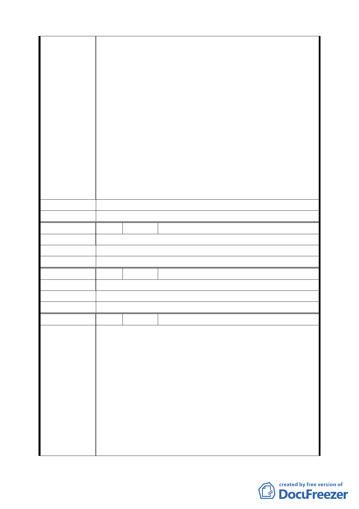

599 之 1 地號土地）不同意參與該聯合開發案，本區域已有
三十二位建物或土地產權所有人具名連署表達不贊成參與
聯合開發案，敬請 葉副市長及貴委員會知悉查照。
二月十六日上五午十時，聯開案區域東西兩側住民代表約十
人經由 李議員文英女仕引領赴副市長辦公室拜會 葉副市
長，陳述民情及表達反對參與聯合開發計畫。葉副市長當場
裁示「大橋國小站聯合開發區（捷）細部計畫案」暫緩呈送
內政部都委會審議，並指示捷運工程局 毛副局長淞鶴先生
及聯合開發處處長、第二課課長等三員再重新宣導聯合開發
案的正面價值，並提供由市府主導與民間自辦的開發案優劣
點給民眾參考比較，也有可能 葉副市長將親自至本區直接
與住民接觸宣導說明。
本區域住民竭誠歡迎 葉副市長親臨實地瞭解民情輿論，但
也望請 葉副市長及貴委員會能正視及尊重本區域住民不同
意參與捷運新莊線大橋國小站聯合開發案的意見與選擇。
建 議 辦 法 不贊成參與聯合開發案。
委 員 會 決 議 同編號 1。
編 號 23 陳情人 陳仁勇（民權西路 245 巷 1 號 2 樓）
陳 情 理 由 不同意。
建 議 辦 法 不同意。
委 員 會 決 議 同編號 1。
編 號 24 陳情人 蔡玲玉（民權西路 245 巷 1 號 3 樓）
陳 情 理 由 不同意，因捷運聯合開發計畫案將影響分配權益，有待商榷。
建 議 辦 法 不同意。
委 員 會 決 議 同編號 1。
編 號 25 陳情人 葉霖奇（民權西路 245 巷 1 號 4 樓）
針對都市計畫「擬定臺北市捷運系統新莊線（北市段）大橋
國小站聯合開發區（捷）細部計畫案」本區域多數里民及本
人（持有大同區民權西路 245 巷 1 號 4 樓之建築物與橋北段
3 小段 599 及 599 之 1 地號土地）不贊成參與該聯合開發案。
本區域民眾認同都市更新的聯合開發方向，但是相關承辦規
陳
情
理
由
劃單位未能詳實將建設開發計畫、補償措施、建築完工後的
分配方案等細節辦法對在地民眾做事先說明，以簡易的問卷
訪查資料做為民意基礎而套用大眾捷運法規相關辦法要在
地民眾就範適用，實有違背民意和損及百姓權益；且捷運出
入口站體並無與民有私地相衝突，有無必要做共同聯合開發
仍有待商榷。所以本人認同市政府改造舊社區之美意，但是
反對本開發案粗糙的作業程序，希望重新落實民意調查作業
一四